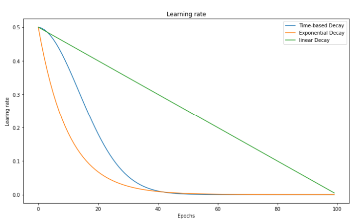
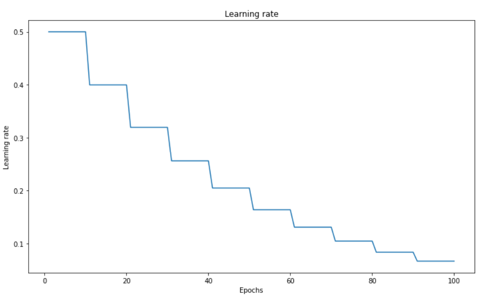
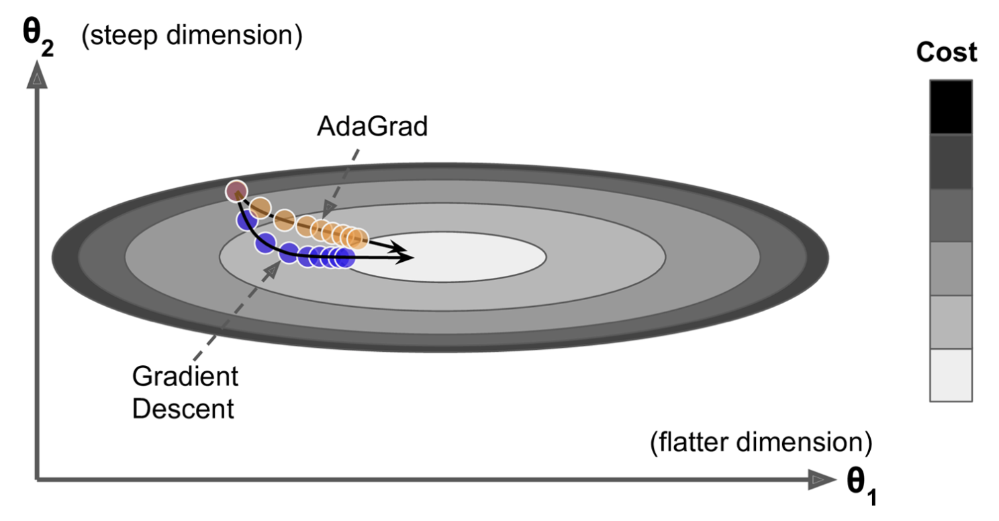

Varying the Learning Rate
Contents
Varying the Learning Rate#
Motivations#
We saw in previous lectures that the Gradient Descent algorithm updates the parameters, or weights, in the form:
The learning rate \(\alpha\) is kept constant through the whole process of Gradient Descent.
But we saw that the model’s performance could be drastrically affected by the learning rate value; if too small the descent would take ages to converge, too big it could explode and not converge at all. How to properly choose this crucial hyperparameter?
In the florishing epoch (pun intended) of deep learning, new optimization techniques have emerged. The two most influencial families are Learning Rate Schedulers and Adaptative Learning Rates.
Learning Rate Schedulers#
Definition 69
In a training procedure involving a learning rate, a learning rate scheduler is a method consisting of modifying the learning rate at the beginning of each iteration.
It uses a schedule function, which takes the current learning rate as input, along with a ‘time’ parameter linked with the increasing number of iterations, to output a new learning rate.
The updated learning rate is used in the optimizer.
Schedule refers to a timing; here it is the index number of the epoch, or iteration, that is incremented over time, i.e. the duration of the training.
Important
What is the difference between epoch, batches and iteration?
As we saw in Lecture 2 Section Gradient Descent, an epoch is equivalent to the number of times the algorithm scans the entire data. It is a pass seeing the entire dataset. The batch size being the number of training samples, an iteration will be the number of batches needed to complete one epoch. Example: if we have 1000 training samples splits in batches of size 250 each, then it will take 4 iterations to complete one epoch.
Question
How should the learning rate vary? Should it increase? Decrease? Both?
Below are common learning schedules.
Power Scheduling#
The learning rate is modified according to:
where \(\alpha_0\) is the initial learning rate. The steps \(s\) and power \(c\) (usually 1) are hyperparameters. The learning rate drops at each step; e.g. after \(s\) steps it is divided by 2 (assuming \(c\) = 1).
Time-Based Decay Scheduling#
The time-based learning rate scheduler is often the standard (e.g. the default implementation in Keras library). It is controlled by a decay parameter \(d = \frac{\alpha_0}{N}\), where \(N\) is the number of epochs. It is similar (a particular case even) to the power scheduling:
As compared to a linear decrease, time-based decay causes learning rate to decrease faster upon training start, and much slower later (see graph below).
Exponential Decay Scheduling#
The exponential decay is defined as:
which will get the learning rate to decrease faster upon training start, and much slower later.
{kind=link}

Fig. 58 . Evolution of the learning rate vs ‘time’ as the number of epochs for three schedulers: linear decrease, time-based decay and exponential decay.
Image: neptune.ai#
Step-based Decay Scheduling#
Also called piecewise constant scheduling, this approach first uses of a constant learning rate for a given number of epochs and then the learning rate is reduced:
{kind=link}

Fig. 59 . Step-based learning rate decay.
Image: neptune.ai#
Learn More
Guide to Pytorch Learning Rate Scheduling on Kaggle
Adaptative Learning Rate#
An algorithm combining Stochastic Gradient Descent with a learning rate schedule would have been considered close to the state-of-the-art before… the arrival of much faster methods called adaptative optimizers. Instead of a separate scheduler, the optimization of the learning rate is directly embedded in the optimizer. These optimizers approximate the gradient using model internal feedback. In other words, they incorporate the history in the weight update. Huge advantage: they are almost parameter-free.
Definition 70
An Adaptative Learning Rate refers to varying the learning rate using feedback from the model itself.
As the variation of the learning rate is done by the optimizer, adaptative learning rates and adaptative optimizers are equivalent terms.
Below are brief descriptions of the most popular adaptative optimizers.
AdaGrad#
This first adaptative algorithm was published in 2011. Compared to the classical Gradient Descent, AdaGrad points more directly toward the global optimum by decaying the learning rate more on the steepest dimension.
{kind=link}

Fig. 60 . The Gradient Descent (blue) vs AdaGrad (orange).
Image: Aurélien Géron, Hands-On Machine Learning with Scikit-Learn, Keras, and TensorFlow, Second Edition#
In the figure above, the AdaGrad takes a more direct thus shorter path than Gradient Descent, as AdaGrad has its learning rate reduced in the direction of steepest descent. This is done by squaring each gradient component into a vector \(\boldsymbol{s}\). The steepest a gradient component, the larger the square of this component \(s_j\). The weights are updated in almost the same way as with Gradient Descent, yet each component is divided by \(\boldsymbol{s} + \epsilon\). The added term \(\epsilon\) is to prevent a division by zero (typically 10\(^{-10}\)). As a result, the algorithm detects how to change the learning rate dynamically and specifically on the large gradient components to adapt to their steep slope.
Mathematically:
The con
AdaGrad performs well on simple problem, like linear regression. With neural networks, it tends to stop too soon, before reaching the global minimum. Luckily, other adaptative algorithms fix this.
RMSProp#
RMSProp stands for Root Mean Square Propagation. It works the same as AdaGrad except that it keeps track of an exponentially decaying average of past squared gradients:
with the decay rate \(\beta\), between 0 and 1, yet typically set to 0.9. One might ask: what is the point to introduce an extra hyparameter? It turns out the default value works well in most cases and does not require tuning. What the update in the expressions (122) shows is a recursive way of computing a so-called Exponential Moving Average (EMA). In other words, \(\beta\) acts as a constant smoothing factor, representing the degree of weighting increase. A lower \(\beta\) discounts older observations faster. A higher \(\beta\) gives more weight to the previous gradient, a bit less weight to the previous previous gradient, etc.
For more elaborated tasks than the simple linear case, RMSProp is robust. It reigned until dethrowned by a newcomer called Adam. Before introducing Adam, let’s first cover the notion of momentum optimization.
Momentum Optimization#
In physics, the momentum \(\boldsymbol{p}\) is a vector obtained by taking the product of the mass and velocity of an object. It quantifies motion. In computing science, momentum refers to the direction and speed at which the parameters move - via iterative updates - through the parameter space. With momentum optimization, inertia is added to the system by updating the weights using the momenta from past iterations. This keeps the update in the same direction. The common analogy is a ball rolling down on a curved surface. It will start slowly but soon “gain momentum”, thus can go through flat gradient surface much faster than with the classic Gradient Descent. Adding momentum considerably speeds the Gradient Descent process. It also helps roll beside local minimum.
The momentum optimization algorithm is as follow:
Here the \(\beta\) parameter controls the momentum from becoming too large. It could be analogous to introducing friction; \(\beta\) ranges from 0 to 1, with 0 meaning high friction and 1 no friction at all. In the literature you will see a common default value of \(\beta\) = 0.9.
Adam#
Adam stands for Adaptative moment estimation. It merges RMSProp with momentum optimization. Recall that RMSProp uses an exponentially decaying average of past squared gradients, while momentum does the same except with gradients (not squared).
Mathematically:
with \(t\) the iteration number.
The first step is not exactly the momentum; instead of an exponentially decaying sum, Adam computes an exponentially decaying average.
The algorithm seems complicated at first glance, especially steps including the averages of \(\boldsymbol{\widehat{m}}\) and \(\boldsymbol{\widehat{s}}\). The division with the betas is to boost at the start of the training the values or \(\boldsymbol{m}\) and \(\boldsymbol{s}\), which are initialized at zero, in order to not stay at zero.
“Many extra parameters on top of the learning rate, so what is the point?” will you say. Actually the momentum decay \(\beta_1\) is set to 0.9, the scaling one \(\beta_2\) to 0.999 and \(\epsilon\) to 10\(^{-7}\). And if the learning rate is still a hyperparameter (usually set at 0.001 at start), it will be adapted to the optimiziation problem at hand by the algorithm. In that sense, the Adam optimizer is almost parameter free.
Learn More
Article: “How to Configure the Learning Rate When Training Deep Learning Neural Networks” on machinelearningmastery.com
Article: “Gradient Descent With Momentum from Scratch” on machinelearningmastery.com
Adaptive Subgradient Methods for Online Learning and Stochastic Optimization.
There is no paper for RMSProp as it was never officially published! One of the authors Geoffrey Hinton presented it in a Coursera lecture. As a consequence, it is amusingly referenced by researchers as slide 29 in lecture 6.
Article: “Gradient Descent with Momentum” helps understand the Exponential Moving Average (EMA), from towardsdatascience.com.
Paper: Adam: A Method for Stochastic Optimization (2015) arXiv:1412.6980.